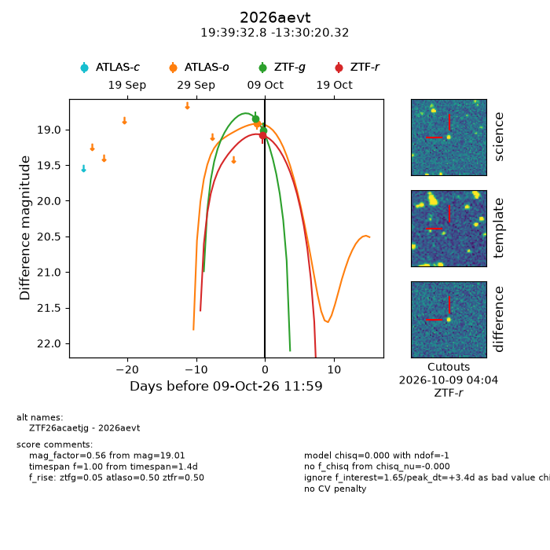
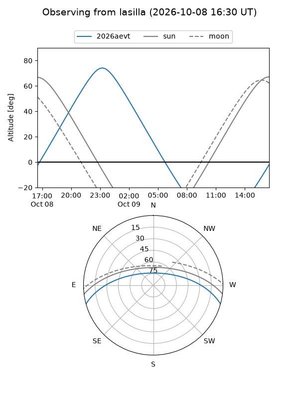
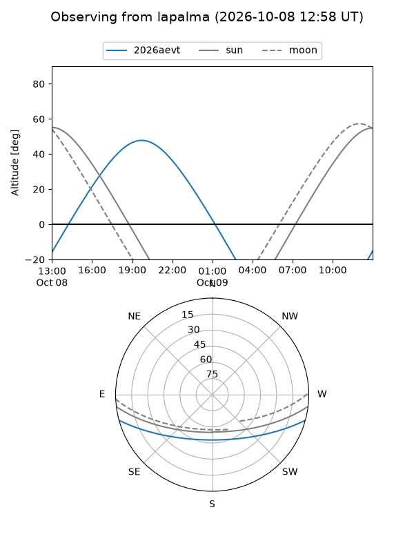
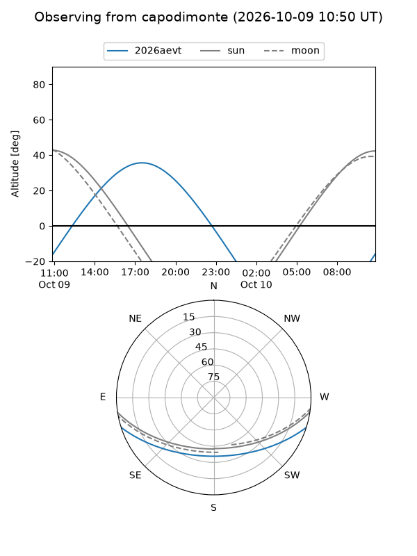
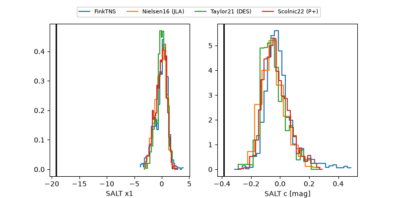

2026aevt
Target 2026aevt at 2026-10-09 12:01
Aliases and brokers:
FINK-ZTF: ztf.fink-portal.org/ZTF26acaetjg
Lasair-ZTF: lasair-ztf.lsst.ac.uk/objects/ZTF26acaetjg
ALeRCE-ZTF: alerce.online/object/ZTF26acaetjg
YSE-PZ: ziggy.ucolick.org/yse/transient_detail/2026aevt
TNS name: wis-tns.org/object/2026aevt
Direct TNS query: direct search
alt names
ZTF26acaetjg (ztf,fink_ztf)
2026aevt (tns,yse)
Coordinates:
equatorial (ra, dec) = 294.8867,-13.50564
equatorial (HMS+DMS) = 19:39:32.81,-13:30:20.32
galactic (l, b) = (26.0096,-16.66740)
Flags:
TNS type: nan
peak dt: +3.4
Photometry:
last atlaso=18.92, ztfg=19.01, ztfr=19.08
1 atlaso, 2 ztfg, 1 ztfr detections
Lightcurve

Visibility



Additional plots
